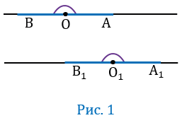
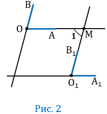
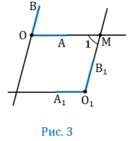

Теорема
Если стороны одного угла соответственно параллельны сторонам другого угла, то такие углы или равны, или в сумме составляют 1800.
Дано:∠АОВ, ∠А1О1В1, ОА ∥ О1А1, ОВ ∥ О1В1.
Доказать: ∠АОВ = ∠А1О1В1 или ∠АОВ + ∠А1О1В1 = 1800.
Доказательство:
Если угол АОВ - развернутый, значит лучи ОА и ОВ будут лежать на одной прямой, при этом по условию ОА ∥ О1А1, ОВ ∥ О1В1, значит точки О1А1 и О1В1 также будут лежать на одной прямой, следовательно, ∠ А1О1В1 - будет развернутым, тогда ∠АОВ = ∠ А1О1В1 (Рис. 1).

Если угол АОВ - неразвернутый, то возможны два случая расположения углов АОВ и А1О1В1.
1 случай

Прямая О1В1 пересекает прямую О1А1 и, следовательно, пересекает параллельную ей прямую ОА в некоторой точке М (смотри следствие 10 из аксиомы параллельных прямых). Параллельные прямые ОВ и О1В1 пересечены секущей ОМ, поэтому один из углов (∠1), образованных при пересечении прямых О1В1 и ОА (Рис.2) равен углу АОВ, т.е. ∠1 = ∠АОВ (по теореме о накрест лежащих углах). Параллельные прямые ОА и О1А1 пересечены секущей О1М, поэтому ∠1 = ∠А1О1В1.
Из равенств ∠1 = ∠АОВ и ∠1 = ∠А1О1В1 следует, что ∠АОВ =<∠А1О1В1.
2 случай

Прямая О1В1 пересекает прямую О1А1 и, следовательно, пересекает параллельную ей прямую ОА в некоторой точке М (смотри следствие 10 из аксиомы параллельных прямых). Параллельные прямые ОВ и О1В1 пересечены секущей ОМ, поэтому один из углов (∠1), образованных при пересечении прямых О1В1 и ОА (Рис.3) равен углу АОВ, т.е. ∠1 +∠А1О1В1 = 1800 (по теореме об односторонних углах). Параллельные прямые ОА и О1А1 пересечены секущей О1М, поэтому ∠1 = ∠А1О1В1.
Из равенств ∠1 = ∠АОВ и ∠1 +∠А1О1В1 = 1800 следует, что ∠АОВ +∠А1О1В1 = 1800. Что и требовалось доказать.